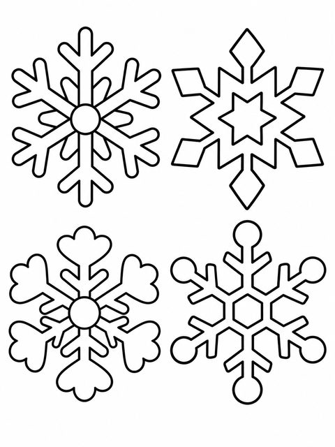
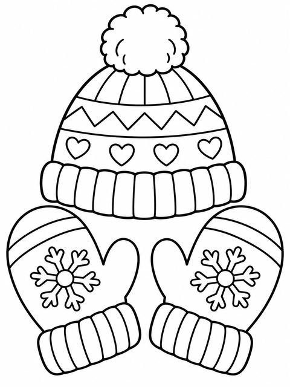
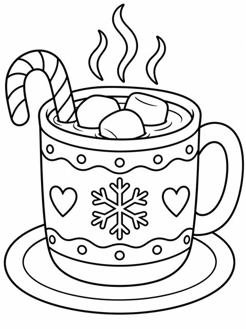
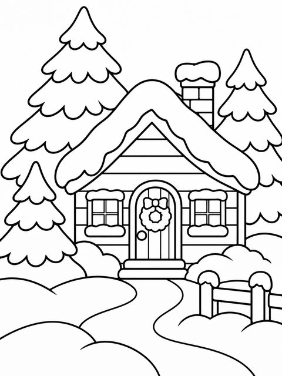
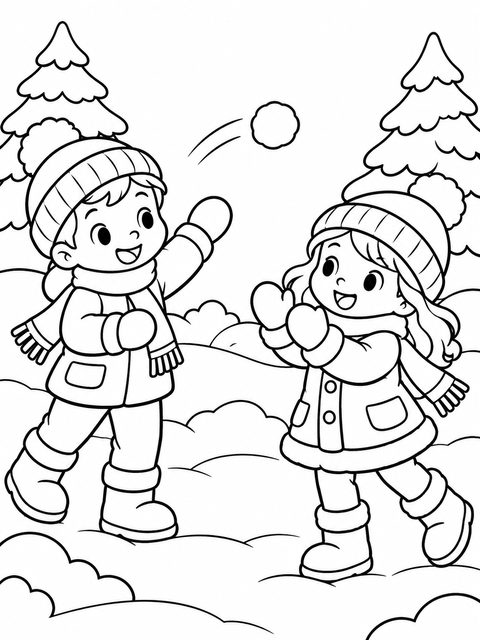
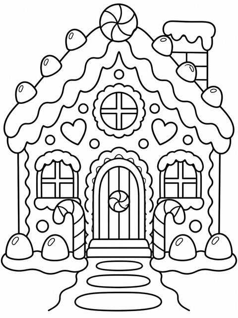

Winter Coloring Pages for Kids
Snowflakes, mittens, cocoa & gingerbread · ages 3–8
Not every December page has to be about Santa. These winter coloring pages show snowy days, warm drinks and holiday baking: snowflakes, mittens and a hat, hot cocoa, a winter cabin, a snowball fight, a gingerbread house and cookies for Santa.
They are just as good in January, when the Christmas decorations are gone but it's still cold outside.
Start with 4 free winter pages — a snowman, a penguin, a snow bunny and a kitten:
⬇ Download 4 free coloring pages (PDF)Free PDF includes:
- Snowman
- Penguin on skates
- Snow bunny
- Kitten in a gift box
Winter pages in the full pack






Christmas Coloring Pages for Kids

- 31 original coloring pages: Santa, reindeer, snowman, gingerbread house, elf, angel, cozy animals and more
- One design per page, thick clean lines for ages 3–8
- US Letter & A4 · instant PDF download
$5.00
Get all 31 coloring pages →Christmas Bundle: Math + Coloring

- Both packs: 49-page Christmas Math Worksheets + 31 Christmas coloring pages
- 80+ printable pages · 2 PDF files · instant download
- $10.99 if bought separately — save 40%
$6.43
Get the bundle →Ideas for using the pages
- Pair the hot cocoa page with a real cup of cocoa on a snowy afternoon.
- Use the snowflake page for a counting game: color 5 snowflakes blue, 3 white…
- Keep a few pages in the car or bag for winter travel days.